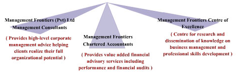

HISTORY
In 1987, after a brilliant academic record, Tilak Padmarajadasa joined the Colombo office of Coopers & Lybrand (C & L) the then big six accounting firm later to be called Pricewaterhouse Coopers after their merger with Pricewaterhouse. Having excelled in assurance and consultancy services, he ended up being appointed as their head of consulting joining the few in the global Coopers family who were admitted to partnership under the age of 30. An idea powerhouse and an entrepreneur he is, Tilak with another C & L alumni Prasantha Abeykoon ventured out in 1997 to set up a management consulting practice in Sri Lanka, dedicated to performance enhancement of contemporary business organizations. Management Frontiers was born in a corner room of his residence. With a prestigious clientele and an impressive record of consulting projects to its credit, Management Frontiers concluded their 75th assignment by the fifth birthday, in 2002. Before the seventh birthday of Management Frontiers, Tilak the Founder Chairman of the Company died along with his beloved wife and two children on the day of tsunami, 26th December 2004.
Today, Management Frontiers provides clients of all tiers, and industries, a range of consulting services. The firm employs a core team of about 20 consultants in varied disciplines and financial & business analysts, and also retains external consultants when the need arises. The firm has gained a reputation as an effective change agent through prudent reengineering of business enterprises. Its list of clients includes a number of public companies, conglomerates, and large family-owned businesses.
ORGANIZATION

Management frontiers (Pvt) Ltd. Management Consultants
The management consulting unit offers a wide range of high-level corporate management advice in strategic management, business diagnostic and turnaround, corporate restructuring and renewal, business process reengineering and designing and institutionalizing performance management systems.
The range of standard management consulting services includes an exciting sustainable cost reduction initiative guided by the firm’s unique approach to cost reduction.
Management frontiers Chartered Accountants
The financial advisory unit offers financial consulting services ranging from project feasibility assessments to business valuations for mergers, acquisitions and divestitures. The unit also carries out performance and financial audits. Tax planning is an exciting and high value adding service this unit has to offer.
Management frontiers Centre of Excellence
Management Frontiers Centre of Excellence is the firm’s knowledge management nucleus. It offers competency-building programs for present and future CEO’s in specific industries. The center synthesizes the collective experience of the firm in specific industry settings in designing and delivering these programs. The centre also offers tailor-made corporate training programs to client organizations in a range of institutional development themes.
Our value proposition
We help liberating the full potentiality of contemporary business organizations in realizing their missions. We are geared to address a wide array of business issues of varying complexity. Our approach is problem centred. In a majority of consultancies, our focus lies on two important strategic considerations of the client; namely: profitability & capacity for growth.
Core values
- ● Passion for excellence
- ● Obsession for improving client performance
- ● Professionalism
- ● Integrity, transparency and objectivity
- ● Disassociation with core businesses in tobacco, narcotics, lethal weapons,animal slaughter and such business of social evil
- ● Commitment to latest knowledge & technology
- ● Caring employer
DIRECTORS
Prasantha Abeykoon BSc. MBA. ACA. FSCMA.
Chairman/Principal Consultant (Founder Director)
- ● Chairman / Founder Director, Management Frontiers,
- ● MBA (Merit Pass) University of Sri Jayewardenepura, Sri Lanka, (2005),
- ● BSc in Business Administration (Second Class Upper Division), University of Sri Jayewardenepura (1991),
- ● Associate Member of the Institute of Chartered Accountants of Sri Lanka (ICASL) (1991),
- ● Fellow Member of Society of Cost and Management Accountants of Sri Lanka (2000), and
- ● Counts over 10 years of experience in the field of Consultancy
H.A. Premaratne BA. MBA. FCILT (London) LLB Attorney-At-Law
Director Projects / Management Consultant
- ● Reading for PhD in Business Management of specialization, University of Sri Jayawardenapura, Sri Lanka,
- ● MBA (Merit Pass), University of Sri Jayawardenepura, 1984,
- ● BA (Hons) University of Ceylon, Peradeniya, 1962,
- ● LLB University of Ceylon, Colombo, 1975,
- ● Attorney at Law, Republic of Sri Lanka, 1977,
- ● Life Member Bar Association of Sri Lanka, 1980,
- ● Fellow of the Chartered Institute of Logistics and Transport, UK, 1978,
- ● Member, Sri Lanka Association for the Advancement of Science, 1984, and
- ● Counts over 20 years of experience in the field of consultancy.
K A L Premaratne BA MBA
Director / Consultant Economist
- ● MSc in Development Economics, University of Strathclyde, Glasgow, United Kingdom, 1977,
- ● BA in Economics, University of Sri Lanka, 1965,
- ● Member of Sri Lanka Association of Economists and
- ● Counts over 15 years of experience in the field of Development consultancy.
ASSOCIATES & SENIOR CONSULTANTS
John Mccallum MCIPD BA
Training Advisor
- ● Chartered Trainer, Member of the Chartered Institute of Personnel and Development,
- ● BA (Social Science),
- ● Dip Youth and Community Development,
- ● National Diploma in Agriculture,
- ● Scottish Diploma in Agriculture, and
- ● Counts over 40 years experience in Consultancy
Dr. H. D. Sumanasekera PhD
Socio Economist / Statistician
- ● PhD in Statistics, University of Sheffield, UK, 1973,
- ● Postgraduate Diploma in Statistics (with Credits), University of Manchester, UK, 1970,
- ● B.Sc. (Hons.) First Class, University of Peradeniya, Sri Lanka, 1965,
- ● Fellow of the Institute of Statisticians, London,
- ● Life Member, Sri Lanka Association for the Advancement of Science,
- ● Life Member, Institute of Management Consultants of Sri Lanka,
- ● Life Member, Applied Statistics Association of Sri Lanka,
- ● Life Member, Sri Lanka Evaluation Association, and
- ● Counts over 25 years of experience in consultancy.
Dr. Sampath Amaratunge PhD
Development Economist / Planner
- ● PhD in Economics of Rural Development, Kagoshima National University, Japan, 2003,
- ● MSc in Economics of Rural Development, Saga National University, Japan, 2000,
- ● M.A. in Economics, University of Colombo, Sri Lanka, 1994,
- ● BA in Economics, University of Sri Jayewardenepura, Sri Lanka, 1990, and
- ● Counts over 10 years of experience in consultancy.
Dr. Reginald Perera MBBS M.Med. Sc. MD
Medical Specialist
- ● MBBS (Sri Lanka) – 1967,
- ● M.Med.Sc.(Community Medicine) – 1975,
- ● MD (Community Medicine) – 1986,
- ● Board Certified Consultant in Community Medicine – 1986,
- ● Fellow of the College of Medical Administrators of Sri Lanka – 1998,
- ● Fellow of the College of Community Physicians of Sri Lanka – 2001,
- ● Hon. Fellow of the Sri Lanka Ayurveda Medical Association, and
- ● Counts more than 15 years of experience in the field of consultancy.
Dr. Jinasiri Fernando Ph.D (London)
Agriculture Specialist
- ● B.Sc. Agriculture (Hons.) University of Ceylon, Peradeniya, Sri Lanka, 1965,
- ● Diploma of Imperial College (DIC), London, 1974, Applied Entomology,
- ● Ph.D (London) in Applied Entomology, 1977 and
- ● Counts over 16 years of experience in the field of consultancy.
Eng. P.S.S. Nonis B.Sc. C. Eng
Civil Engineer
- ● B.Sc. in Civil Engineering, University of Moratuwa, 1982,
- ● C. Eng, MIE (SL), 1986,
- ● Member Institute of Engineers Sri Lanka, and
- ● Counts over 18 years of experience in the field of consultancy
Mrs. C.M. Fernando M.Sc. PG Dip (Population Studies) PG Dip (Stat) B.Sc.
Statistician/ Survey Specialist
- ● M.Sc. (Survey Methods), City University, U.K , (1984),
- ● Post graduate Diploma in Population Studies, University of Cardiff, Wales, UK, (1974),
- ● Post graduate Diploma in Statistics, Vidyodaya University of Ceylon, (1969),
- ● B.Sc. (Special), University of Ceylon, (1954), and
- ● Counts over 25 years experience in the field of consultancy.
Leonard Neil Theverapperuma BA MBA
Training Specialist
- ● MBA University of Sri Jayawardenapura, Sri Lanka, (1984),
- ● Reading for PhD in Business Management of specialization, University of Sri Jayawardenapura, Sri Lanka,
- ● BA University of Ceylon, (1967),
- ● Diploma in Purchasing & Supply Institute of Marketing Services, U.K. (1986),
- ● Technician Certificate Institute of Management Services, U.K, (1979),
- ● Diploma in Logistics – Institute of Logistics Management, U.K, (1988),
- ● Member Institute of Marketing, UK,
- ● Member, Institute of Purchasing & Supply UK,
- ● Member, Institute of Materials Handling, UK,
- ● Member, Institute of Export (Grad) UK,
- ● Member, Institute of Supplies & Materials Management, Sri Lanka, and
- ● Counts over 20 years of experience in the field of consultancy.
Ms. G. I. Unamboowe BA MBA
Women Development / Business Development Specialist
- ● MBA, Postgraduate Institute of Management, University of Jayewardenepura, Sri Lanka,
- ● Certificate ‘Institutional Policies for Multi-lateral Trade’ Conducted by UNDP/ UNCTAD, (1995),
- ● Certificate in Design & Management of Computers, National Institute of Management, Sri Lanka, (1985),
- ● Bachelor of Arts Degree, University of Ceylon, Peradeniya, Sri Lanka, (1961), and
- ● Counts over 17 years of experience in the field of consultancy.
Elayathamby Annalingam FSCMA FICA
Financial Specialist
- ● Fellow of the Institute of Chartered Accountants, Sri Lanka (1980),
- ● Fellow of the Society of Certified Management Accountants, Sri Lanka (1978),
- ● Diploma in Public Financial Management awarded by Sri Lanka, Institute of Development Administration (1980),
- ● Diploma in Accountancy (1976), and
- ● Counts over 30 years of experience in the field of consultancy.
Mark Antony Warnakula BA PG. Dip. (Rural Area Development)
Micro Finance Specialist
- ● Post-Graduate Diploma in Rural Area Development, University of Colombo (1981),
- ● Intermediate Level, Institute of Bankers, London (1968),
- ● Bachelor of Arts Degree (1962), and
- ● Counts more than 25 years of experience in the field of consultancy
Dr. Lionel Amaragunasekara Ph.D M. Phil. B. Sc. PG. Dip.
Educationalist
- ● Doctor of Philosophy in Education, University of Colombo, Sri Lanka. (1988),
- ● Master of Philosophy in Education, University of Colombo, Sri Lanka. (1978),
- ● Diploma in Education Postgraduate Degree, University of Ceylon, Sri Lanka (1970),
- ● Bachelor of Arts Degree, University of Ceylon, Peradeniya, Sri Lanka. (1963), and
- ● Counts more than 15 years of experience in the field of Consultancy
Eng. Luwishennadige Sanath Damsiri Fernando M.Sc. B. Sc.
Water Sector Engineer
- ● M.Sc (Structural Engineering & Construction Management), University of Newcastle Upon Tyne, United Kingdom
- ● Diploma in Construction Management, University of Moratuwa, Sri Lanka
- ● B.Sc Engineering Degree (Civil) University of Moratuwa, Sri Lanka
- ● Counts more than 10 years of experience in the field of Consultancy